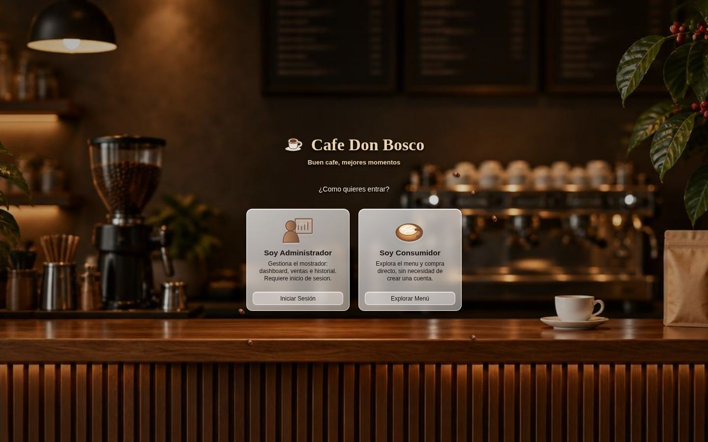

Captura de Café Don Bosco

Café Don BoscoCafetería · tienda en línea y sistema de gestión
Sistema web completo para una cafetería: una tienda en línea donde el cliente personaliza su pedido y paga sin crear cuenta, y un panel de administración con punto de venta, inventario e historial. Todo comparte la misma base de datos.
- Tienda en línea
- Pedidos personalizados
- Panel de administración
- Ticket en PDF y WhatsApp